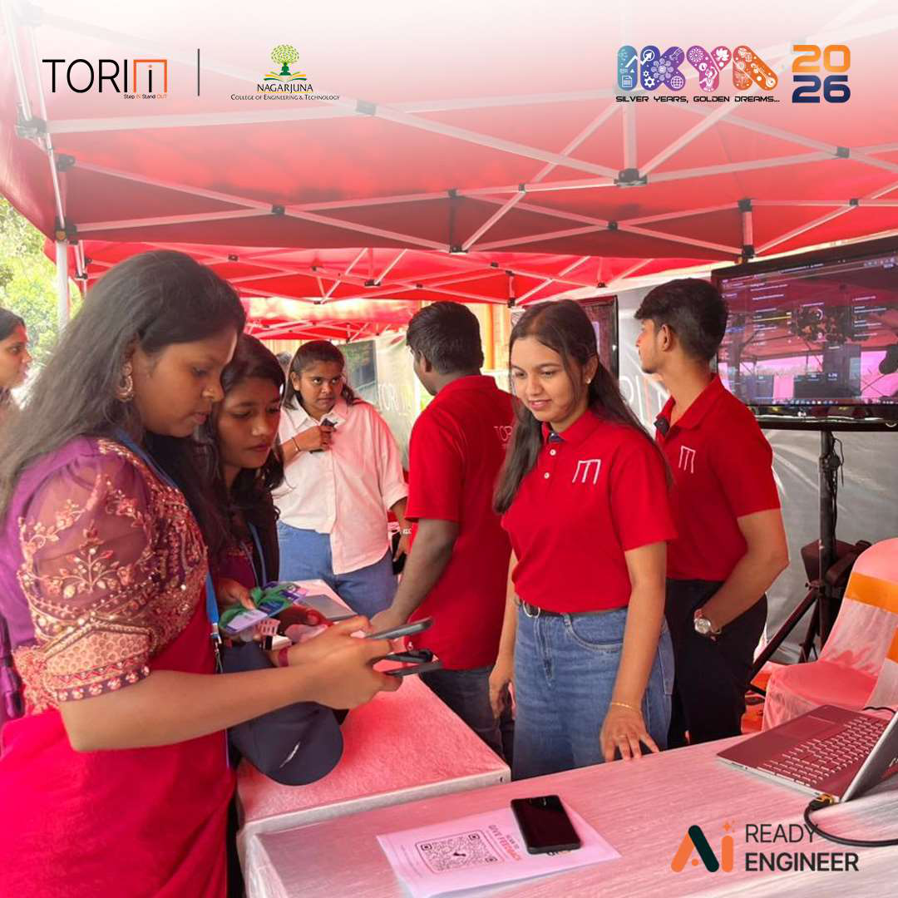
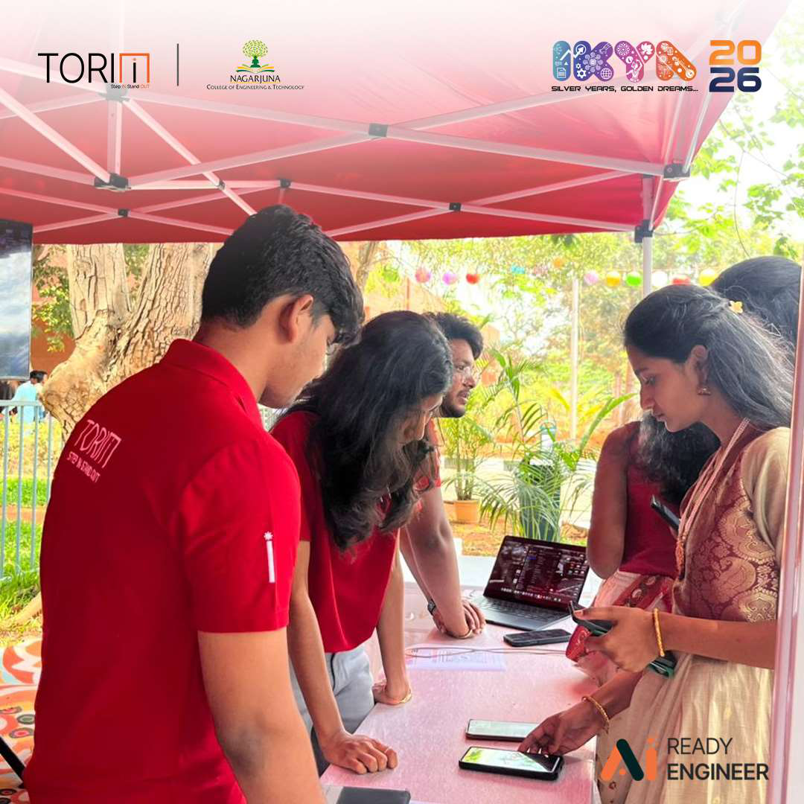
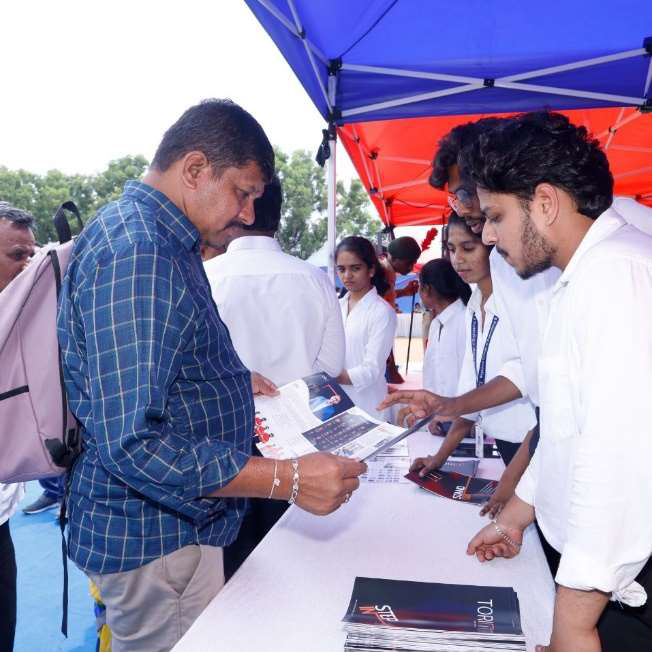
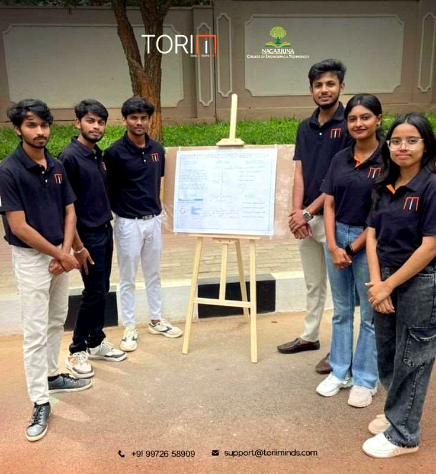
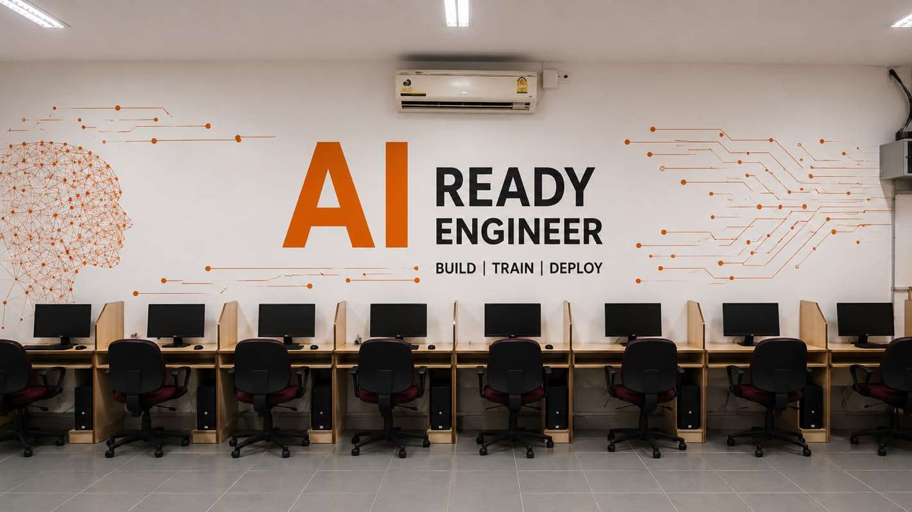
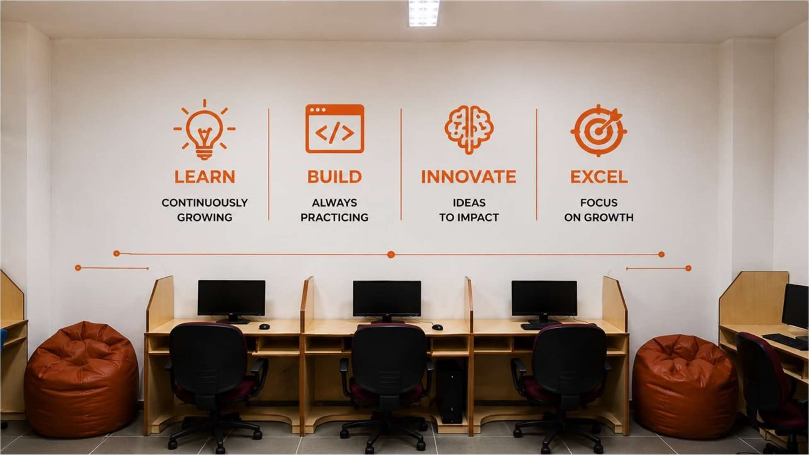
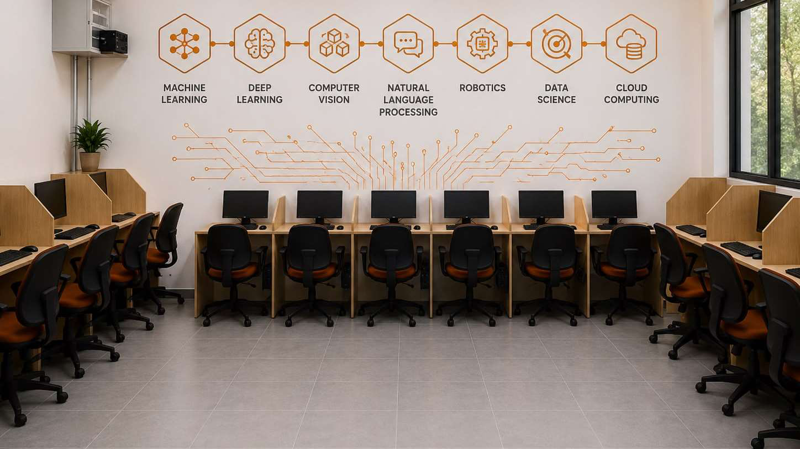
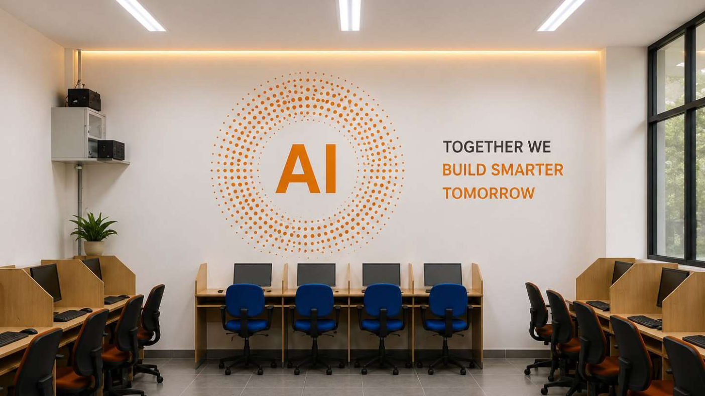
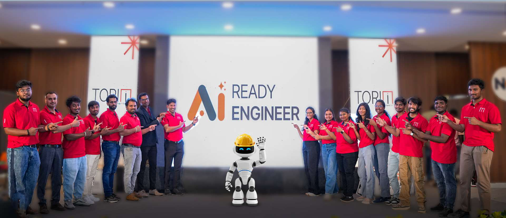

A strategic partnership between Technical Hub and NCET — embedding Claude AI into everyday academic and operational cycles to create a fully AI-skilled institute.

The strategic partnership between Nagarjuna College of Engineering and Technology and Technical Hub has always been driven by a single ambition — to push academic boundaries and prepare students for the world they will actually graduate into. Its most recent chapter opens an entirely new frontier: artificial intelligence, applied not as a buzzword, but as a working discipline across the campus.
Rather than treating AI as an isolated technical skill confined to a single course, Technical Hub has seamlessly embedded Claude AI into NCET's everyday operational and academic cycles. The result is a foundational shift — from occasional experimentation to an institution-wide culture where intelligent assistance is simply part of how teaching, learning, and building get done.
A series of well-curated, high-impact initiatives engineered to engage the campus community at every level — demystifying advanced AI models and encouraging daily use.
Specialized, hands-on workshops crafted for academic leadership equip educators with advanced reasoning and prompting strategies inside Claude. Faculty learn to augment their research, lighten heavy administrative loads, and enrich their instructional design — so the people who shape the curriculum lead the AI shift rather than follow it.
High-visibility booths placed at the heart of campus invite students into live, real-time conversations with Claude. In minutes, they watch AI debug their code, unpack complex engineering theories, outline a project from scratch, and compress hours of routine work — turning curiosity into a daily working habit.



Standard computer facilities have been fully retrofitted into advanced environments dedicated to cognitive computing and AI application development — central testing grounds where students build, train, and deploy with Claude.

Recognising that lasting transformation needs real infrastructure, ordinary computer rooms have been reimagined as complete AI workbenches. From focused individual workstations to relaxed collaborative zones, every lab is engineered as a testing ground where students build, stress-test, and deploy practical software solutions — natively assisted by Claude at each step.



Working hand in hand with NCET's academic board, Technical Hub has systematically aligned the engineering curriculum with the AI workflows used in industry today. Specialized modules and core courses — built around LLM architecture, prompt engineering, and collaborative AI development — ensure students engage modern industry tools not as an extra-curricular novelty, but as a graded, examinable part of their degree.
Find and fix issues across languages in real time.
Break down complex engineering concepts on demand.
Plan, scope and structure projects end to end.
Speed up day-to-day academic deliverables.
Technical Hub strategically deployed dedicated, Claude-certified architects directly onto the NCET campus — radically shifting the institution's digital landscape.

Real-time, production-level advisory clinics for both students and faculty.
Hands-on auditing to elevate the quality and rigor of student innovation.
Ensuring innovations align with modern cloud and AI architectural patterns.
These certified experts provide real-time, production-level advisory to both students and faculty. By hosting advanced troubleshooting clinics, auditing live student projects, and ensuring every campus innovation aligns with modern cloud and AI architectural patterns, they have eliminated the traditional learning curve — guaranteeing a flawless, friction-free transition into a truly AI-skilled institution.
Campus-wide FDPs and interactive AI booths build a deeply rooted AI culture.
Standard facilities transformed into dedicated AI Skill Enrichment Labs.
LLM architecture, prompt engineering & collaborative AI woven into credited coursework.
Claude-certified architects deployed on the ground for production-level advisory.
Claude shifts from occasional novelty to a primary driver of academic execution.
Technical Hub has not only unlocked the raw intellectual potential of our institution but has established an explicit, reproducible blueprint for the future of AI-driven technical education.
— Nagarjuna College of Engineering & TechnologyAwareness, infrastructure, curriculum, and on-ground expertise have combined into a profoundly visible change across NCET — a campus where advanced AI is now part of everyday execution.
Claude has moved from an occasional novelty to a primary driver of academic and operational execution — used daily, not occasionally.
On-ground architects eliminated the traditional learning curve, so students and faculty adopted AI without disruption to existing workflows.
Educators reclaimed time from administrative load and enriched their instructional design with AI-augmented research and reasoning.
The entire engagement is documented as an explicit, scalable model for the future of AI-driven technical education.
Through well-curated awareness, modern infrastructure, an AI-aligned curriculum, and the dedicated guidance of deployed technical experts, Technical Hub has not only unlocked the raw intellectual potential of NCET — it has established a reproducible blueprint for the future of AI-driven technical education. The transformation is no longer an experiment; it is the new operating standard.
Everything you need to understand how the Technical Hub × NCET partnership works — and why it matters.